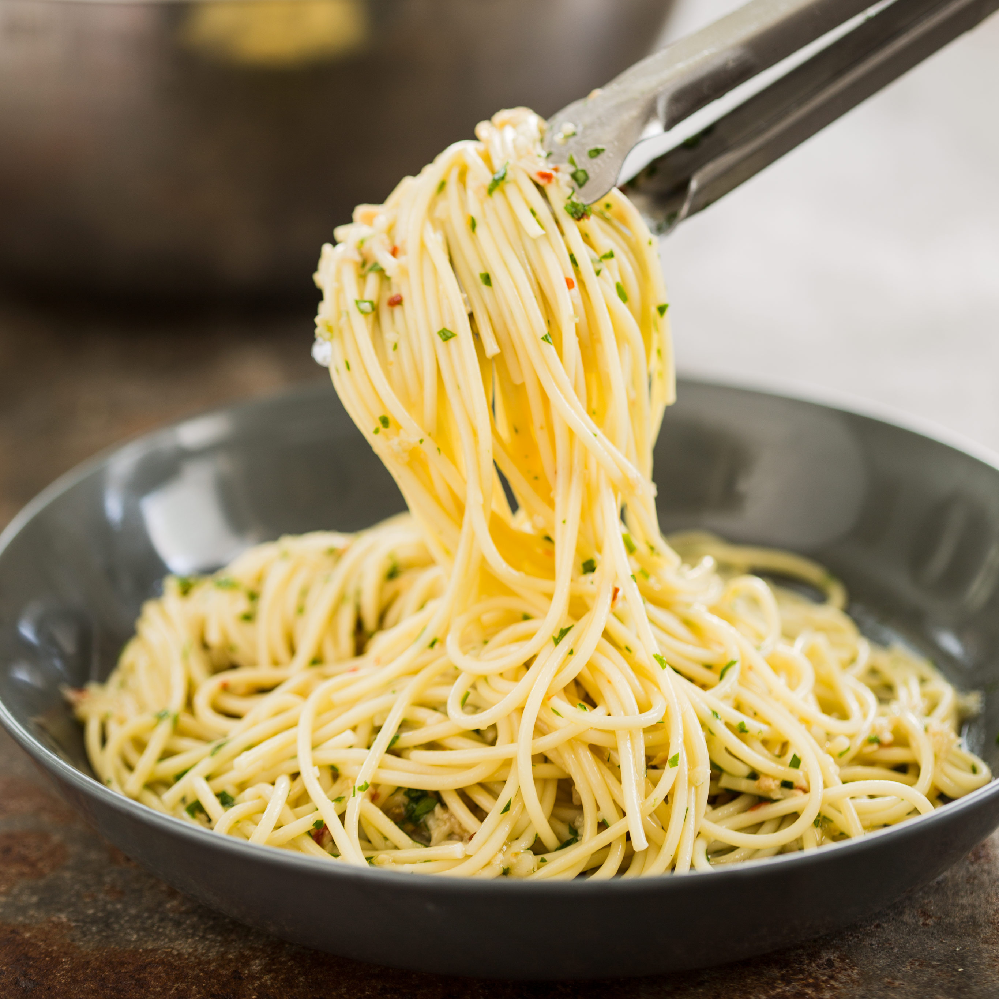

Garlic and Oil Pasta

Ingredients
- 300g of pasta (of your liking)
- 7 heads of garlic
- 1 Onion
- Salt to taste
- 20 ml of olive oil
- Seasoning to taste
Steps
- Cook up the pasta on a large pan filled up half-full of salted boiling water.
- In a frying pan add the olive oil, chopped garlic and chopped onion.
- Fry the garlic and Onion until it looks golden.
- When the pasta is cooked add it directly to the frying pan.
- Add all the seasoning.